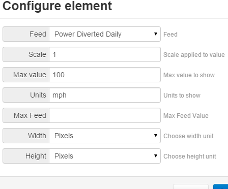
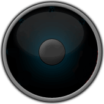
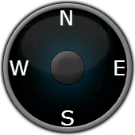
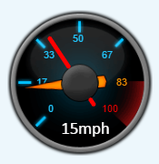

Could see the use for having a gauge with 2 needles, one for current value, and one for today max value.
The layout of the needles could be the normal + one thin longer needle.
Could be come in handy showing power and weather stuf.
So my idea is to take the jgauge and make a copy of the needle.
So any hints or advice on how to do this?
Re: widget jgauge with 2 needles?
Made a jgauge copy with 2 needles, so it can handle 2 feeds like current and max
Re: widget jgauge with 2 needles?
HI Larsjo
I'm trying to do the same thing but I was not able to draw the 2nd needle.
I managed to get 2 feeds working on the widgets. It's also showing the 2 feeds in the canvas details when saving. But as soon as I want to add the 2nd needle to the ctx.draw part it will screw up.
Would you like to share your work with us? I'm not that good in JS stuff :-)
Still need to do a better thinner needle design to show the max value. For now I also just changed the color.
Thanks a lot
Andreas
Re: widget jgauge with 2 needles?
Tried to make a js file with 2 needles, but ended with just making a new jgauge with transparent background and put it on top of the first jgauge, with same max and same size.
You can adjust the txt in the js file to place the value in the dial again, if you want value for both needles.
Re: widget jgauge with 2 needles?
I think I have managed to create a jgauge with max needle :-)
How do you like it? If someone wants to test it please let me know....
Re: widget jgauge with 2 needles?
Hi
It looks great
Is it hard to install or is it just a case of copying the files to the right folder
Steve
Re: widget jgauge with 2 needles?
Should be just a simple copy job. You can download the zip with the folder of the widget here: Download
Will put it on my git later.....
Copy it to the modules/dashboard/widget folder.
In lack of a good name I just called it jgauge2 lol :-) I try if I can do also one with 3 needles to also show the min values but the missing options to enter a range instead of just the max value is something I have to think of. Temps can also go below 0°C....
Let me know if it is working or not for you. We also can change the style of the max needle if someone is not happy with it. Just used GIMP to draw a straight line :-)
Regards
Andreas
Re: widget jgauge with 2 needles?
I’ll give it a go tonight and let you no
Thanks Steve
Re: widget jgauge with 2 needles?
Andi/Larsjo, any chance of creating a windrose widget to display wind direction?
Sorry if it's a little off-topic - but it's still about widgets!
It comes up regularly in the forum, and several attempts have been made, including this one, but it's not packaged as a plug-in making it difficult to use, and doesn't appear to visually blend in with the other emoncms widgets.
If needed, I could create some simple png files to use with the javascript, but struggle with the code.
Paul
Re: widget jgauge with 2 needles?
I think Larsjo does already have something like this on his dashboard. But you're right Paul. We should somehow stick to the design of the gauges so that we do not have to much different design.
Would it be enough to use the black gauge background? Does someone have the original without red area? It would be of course nice if you could draw something Paul. I too had some struggles with this code. The way it was built it was only capable for drawing one feed. So I had to rearrange a lot to make it work. Would be really cool if someone could test it besides me and Steve.
One thing I really want to try is to create widgets and visualization widgets like the myPV apps univers. I like the glow and on OLED displays it looks unbelievable good with black background and the contrast of OLEDs. :-)
Re: widget jgauge with 2 needles?
Andi tried the widget, but there is no way of selecting the second feed. The dropdown feed menu is not present.
Paul

Re: widget jgauge with 2 needles?
Would it be enough to use the black gauge background? Does someone have the original without red area?
Do you want N S E W printing on it, or maybe leave some room at the bottom for the degrees?
Paul
 
Re: widget jgauge with 2 needles?
Hi
i have the same as Paul only one dropdown feed
Re: widget jgauge with 2 needles?
Ooops, my fault. I changed so much that I also forgot to correct my typo. Please try again. You can use the same link. Just exchanged the rar file.
@ Paul
What about having the direction nearer to the center and let the js code write the degrees on the gauge like the ticks on the standard gauge. That way we have the help to know what 270° means and you actually don't need the digits below?
I would also like something like this but it is way to complicated:
http://jsfiddle.net/gh/get/jquery/1.7.2/highslide-software/highcharts.com/tree/master/samples/highcharts/demo/polar-wind-rose/ thats to complex for me at the moment but would actually solve a lot of weather things :-) but the compass of course is a good start to learn a little bit more about the widgets and emoncms :-)
Re: widget jgauge with 2 needles?
Sounds good. Maybe rather than me guess the positions, if you can use the blank image to format the ticks, I can add the direction graphics later.
Yes, the jsfiddle looks good and provides a lot of information, but a lot of users I think would opt for the easier to digest display!
Paul
Re: widget jgauge with 2 needles?
That's much better! thanks.
I'm going to use it to display wind speed & wind gusts.
This is really a nice addition to emoncms.
Paul

Re: widget jgauge with 2 needles?
Cool, I'm really glad it's working now for others too :-) Let me know if there is a better needle for the max graph.... I'm not a designer so just using GIMP and simple drawing. But maybe someone has more skills in drawing than I do :-)
Compass work in progress here: http://swiss-solar-log.ch:85/firefox&id=102
What about ditching the center cap and showing there the N-E-W-S? What do you guys think about the needle just on the outer side? Makes it less crowded I think.
Re: widget jgauge with 2 needles?
I think that the solid red needle looks ok, as it avoids confusion with the primary needle.
I agree with losing the center cap, as traditionally they don't exist with windrose's, if you can sort the js, we can then look at various graphic options.
Paul
Re: widget jgauge with 2 needles?
js done for compass and working. Test download here: Download
I think I have found an annoying thing. It looks like the widget searcher script does not only look for widget folders, it also directly loads them. So I had a hard time figuring out why I cant use your background windrose.png. The load functionality looks llike this for jgauge, jgauge2:
However changing now the needle and img filenames did not load the windrose.png or my new needle.png. As the variables img and needle were already used by jgauge and jgaug2 it loaded them always instead of my wanted files. I now had to rename the variables to:
I don't know if this is a known thing but it could be a little bit annoying if it is also using other things from other widgets without knowing that :-/
Does the dashboard always load the the js content even it if is not used?
Re: widget jgauge with 2 needles?
Hi
The widgets work great and now have pride of place in the center of my dashboard
Thanks Steve
Re: widget jgauge with 2 needles?
Thanks Steve for testing! I'm glad it's working.
When looking on your dashboard I saw that you also calculate the costs. I somehow never managed to achieve this for my grid and solar stuff. Would it be ok for you if you share your feed setup for this? My e-mail is in the jgauge2_render.js in the comments section. Or we can use PM here.
Thanks
Andi
Re: widget jgauge with 2 needles?
Hi
Yes of course i can I'll email you i think its a bit of messing :)
are you running EmonCMS 9
Steve
Re: widget jgauge with 2 needles?
@ Steve, yes I am, Thanks a lot!
Have created an additional compass widget Compass2 :-) I kind of like it. Looks really professional :-)
see here: http://swiss-solar-log.ch:85/firefox&id=102 it has a windrose in the middle and on the outside the degrees :-) They seem to match so the math behind should be correct :-)
Re: widget jgauge with 2 needles?
you have mail
Steve
Re: widget jgauge with 2 needles?
Hi
There is one other think i don't no if you can help me or not my Power Balance Now is not quite right i'd like the green bar at the top to be a lot smaller maybe a 1/4 of the size it is now iv had a look at the .js file but im not a coder so i cant make head nor tail of it i don't me more orange at the sides to fill it out if you could take a look that would be great
Thanks Steve
Re: widget jgauge with 2 needles?
I've just created a new thread for the compass/windrose, so members will be able to search & find it easier.
Going back to the jgauge, I was thinking about it earlier, and wondered if the javascript could be changed slightly so instead of creating another jgauge (jgauge2) it could be possible to replace the original with your 2 feed gauge.
Could the second feed be left as a user option, and if left blank, the gauge would only display the needle for feed1, but if a second feed was selected, then needle2 would become visible.
Also, could I suggest a few more changes below for consideration;
Call 'Feed' - 'Feed 1' and the 'Max Feed' - 'Feed 2'
Move 'Feed 2' immediately beneath 'Feed 1', adding the help text 'Optional, add a second feed' (if the top paragraph is feasible).
Reason that I suggest this is that not everyone will use the second feed as a 'Max' feed, some may use it for wind speed/gusts, indoor/outdoor temp, or temp/minimum temp, and it may be misleading.
Paul
Re: widget jgauge with 2 needles?
Glad i got you all going on this.
Great work from you all.
Re: widget jgauge with 2 needles?
Makes sense what you say Paul. I just changed the ordering and renamed them to feed 1 and feed 2.
I now have to identify how to make feed 2 optional. I hope it could be as easy as changing the first values to an emtpy one but it will change also the behavior of feed 1 as they use the same definitions. Maybe we have to think about creating a general 2nd feed possibility in the designer.js to something like this:
Of course I then have to redo the jgauge widgets and to use the feedid2 definition. With that we can change the behavior only for this field I think. But maybe Tristan or Chaveiro can jump into this discussion as this then will change a little bit more than just a widget :-)
Re: widget jgauge with 2 needles?
It would be great if there was an "Offset" value also, some feeds like pressure starts high, and offset gives the possibility to zoom in.
Re: widget jgauge with 2 needles?
Could you make the jgauge background with a different "var" name? Just so that we can pick another background for this jgauge without messing with the org jgauge.
Change var img to img_jgauge2 in the js
http://2.108.135.190/Sol/dashboard/view?id=13
Re: widget jgauge with 2 needles?
Hi Larsjo
I actually did when I found out that the dashboard is preloading all the JS files. Just forgot to exchange the rar files on my server.
It should now be easy to exchange it. I also made the suggested changes from Paul to Rename the Feeds to Feed 1 and Feed 2 with some hint on Feed 2 and the ordering of them. So both Feeds are now below each other.
Link to download: Download
Re: widget jgauge with 2 needles?
My jgauge2 mods
Re: widget jgauge with 2 needles?
Maybe to include in main repo?
Re: widget jgauge with 2 needles?
Is the intention to exchange the normal one or as an addition? If as an exchange to the existing I need to look for a way to make the 2nd feed optional. For now it requires both feeds to be filled out. If someone knows js better than me (novice level 00.1 :-)) maybe can help with this.
My Github repo for this is here: Github
Re: widget jgauge with 2 needles?
Firefox, i've refactored your changes and will include on main repo as a new widget.
It's a nice addition, thanks.